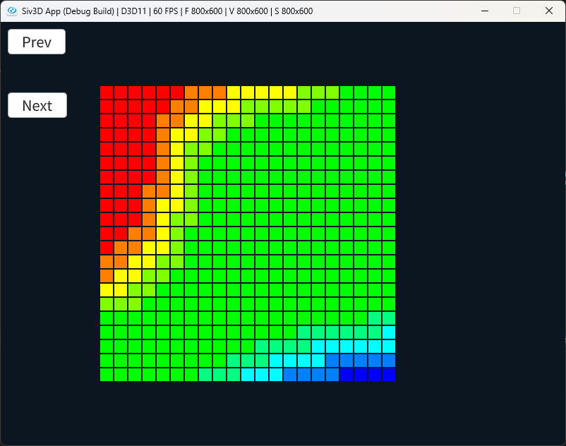

Jacks Car Rental Problem
次にやるのは方策反復.
方策反復は方策の評価を行い、それを改善して次につなげる.
この繰り返しを最適になるまで繰り返すものである.
式で表すと次のようになる.
この式は非常にシンプル、という方策から価値が得られる.
これを使って改善を行い、また新しい方策を得るといった感じで精度を上げていく.
これを実際にジャックのカーレンタル問題という問題で解いていくことで理解していく.
まずは問題設定から考えていく.
ジャックは2つの支社のマネージャーで、2つの支社で車を貸している.
まあ要は2店舗のレンタカー屋を経営してるわけだ.
レンタカー屋としては仕事としては車を貸すことなので、貸すことになるわけだが、
- 車を1台貸したら、10ドル貰える
- レンタカー屋に車がなければ貸せない
という条件で報酬がもらえることになる.
そして、一つのレンタカー屋では20台の車を置ける.
まずはここまでの定数を用意してみよう.
これがポアソン分布.
今回はポアソン分布がどんなものかは置いといて、この確率分布に沿って人が来るんだなくらいで考えとく.
このポアソン分布はで決まるが、今回はそれぞれ$\lambda_{1}=3, \lambda_{2}=4$とする.
constexpr int RENTAL_REQUEST_FIRST_LOCATION = 3; // 最初の位置でのレンタル要望の期待値
constexpr int RENTAL_REQUEST_SECOND_LOCATION = 4; // 次の位置でのレンタル要望の期待値
こちらはそれぞれ$\lambda_{1}=3, \lambda_{2}=2$とする.
constexpr int RETURN_FIRST_LOCATION = 3; // 最初の位置での車返却の期待値
constexpr int RETURN_SECOND_LOCATION = 2; // 次の位置での車返却の期待値
ジャックは2ドルかかるが、片方のレンタカー屋からもう片方のレンタカー屋に移せる.
2ドルかかっても、次の日に車を貸し出せれば0ドルのところが10ドル入るので、結果8ドル得することになる.
なので、車がない場合は移動するのも重要な戦略となる.
ただし、夜の間に動かせる車の数は最大5台である点には注意が必要である.
constexpr int MAX_MOVE_CARS = 5; // 夜の間に動かす車の数
constexpr double MOVE_CAR_COST = 2.0; // 1台の車を動かす際のコスト
ベルマン方程式の割引率は0.9としておく.
また、ポアソン分布のnに関しては11が最大としておく.
これで定数の準備が終わった、実際にこの条件を元に方策反復をしていこう.
まずは夜に動かせる全行動を定義しておく.
正の値は1つ目のレンタカー屋からの車の移動.
逆に負の値は2つ目のレンタカー屋からの車の移動を表す点は意識しておくとよいかも.
// 全てのあり得る行動
std::vector<int> actions;
for (int value = -MAX_MOVE_CARS; value <= MAX_MOVE_CARS; value++)
{
actions.push_back(value);
}
// ポアソン分布の確率
auto CalculatePoissonProbability = [&](int n, double lambda)
{
double factorial = 1.0;
for (int i = n; i > 0; i--)
{
factorial *= i;
}
return std::pow(lambda, n) * std::exp(-lambda) / factorial;
};
そのため、まずは現状の各支所の車の台数とそこの評価値を定義しておく.
Array<double> values; values.resize((MAX_CARS + 1) * (MAX_CARS + 1), 0.0);
Array<double> policies; policies = values;
// policy evaluation
while (true)
{
Array<double> oldValues = values;
for (int i = 0; i < MAX_CARS + 1; i++)
{
for (int j = 0; j < MAX_CARS + 1; j++)
{
int index = i * (MAX_CARS + 1) + j;
values[index] = ReturnExpected({i,j}, policies[index], values);
}
}
double maxValue = std::numeric_limits<double>::lowest();
for (int i = 0; i < values.size(); i++)
{
maxValue = Max(maxValue, Abs(oldValues[i] - values[i]));
}
// 収束と判断したら終了
if (maxValue < 1e-4)
{
break;
}
}
ReturnExpectedで更新を行う、そして収束してたら終了するだけ.つまり違う点は
ReturnExpectedの更新が書ければ前と同じとなる.次はこれを見ていこう.
まず最初は夜に車を動かす際のコストを計算する.
auto ReturnExpected = [&](const Vec2& state, double action, const Array<double>& currentValue)
{
double returnValue = 0.0;
// 車を動かすためのコスト
returnValue -= MOVE_CAR_COST * Abs(action);
actionが動かす台数で、MOVE_CAR_COST=2は動かす際のコスト
5台動かすなら2x5で10コスト、3台なら2x3で6コストみたいな感じ.次に車の台数を動かすので、その分を考慮していく.
// 車を動かす
double firstLocationCars = Min(state.x - action, static_cast<double>(MAX_CARS));
double secondLocationCars = Min(state.y + action, static_cast<double>(MAX_CARS));
一つ目のレンタカー屋から動かす場合を試しに考えてみよう.
state.x - actionなので、actionが正の場合は車を確かに動かしてるのが分かる.そして、もしactionが負の場合は車の数が増えることになる.2つ目のレンタカー屋から持ってくる感じだね.
さて、次に車を貸し出す方を考えてみよう.
まずはポアソン分布で使うnを全部列挙する.
ベルマン方程式の計算をするので、全パターンを列挙する必要があるからだね.
for (int first = 0; first < POISSON_UPPER_BOUND; first++)
{
for (int second = 0; second < POISSON_UPPER_BOUND; second++)
{
//...
}
}
nと変数から確率を計算する.// 確率
double firstProb = CalculatePoissonProbability(first, RENTAL_REQUEST_FIRST_LOCATION);
double secondProb = CalculatePoissonProbability(second, RENTAL_REQUEST_SECOND_LOCATION);
double probability = firstProb * secondProb;
次に貸し出す台数を決定する.
台数はfirstとsecondじゃない？となるかもだけど、レンタカー屋にあるだけの台数しか貸し出しはできない.
3台の貸し出しをしたいという客がいても、2台しかレンタカー屋にしかないのと同じである.
なので、
min関数を駆使して貸し出せる台数よりは超えないようにしておく.そして貸し出した総計に関しても用意しておく.
double validRentalFirstLocation = Min(firstLocation, static_cast<double>(first));
double validRentalSecondLocation = Min(secondLocation, static_cast<double>(second));
double totalRentalValidLocation = validRentalFirstLocation + validRentalSecondLocation;
トータル貸し出し台数は計算してあるので、これに報酬分を掛けるだけである.
そして、台数はそのまま貸し出し分を引くだけ、何も難しいことはない.
double reward = totalRentalValidLocation * RENTAL_CREDIT;
firstLocation -= validRentalFirstLocation;
secondLocation -= validRentalSecondLocation;
次は客からの返却の方を考える.
まず最初の確率の計算までは貸し出しの時と同じ.
ただし最終結果は貸し出し時のモノも合わせたものとなる.
for (int returnedFirst = 0; returnedFirst < POISSON_UPPER_BOUND; returnedFirst++)
{
for (int returnedSecond = 0; returnedSecond < POISSON_UPPER_BOUND; returnedSecond++)
{
// return時の確率も考慮
firstProb = CalculatePoissonProbability(returnedFirst, RETURN_FIRST_LOCATION);
secondProb = CalculatePoissonProbability(returnedSecond, RETURN_SECOND_LOCATION);
double returnProbability = probability * firstProb * secondProb;
// ...
}
}
返却されてもおける台数は決まっている.
そのため、置ける最大台数を超えないようにするのを忘れずにする.
int returnedFirstLocation = firstLocation + returnedFirst;
returnedFirstLocation = Min(returnedFirstLocation, static_cast<int>(MAX_CARS));
int returnedSecondLocation = secondLocation + returnedSecond;
returnedSecondLocation = Min(returnedSecondLocation, static_cast<int>(MAX_CARS));
returnValue += returnProbability * (reward + DISCOUNT * currentValue[returnedFirstLocation * (MAX_CARS + 1) + returnedSecondLocation]);
次は方策反復における大事な処理、方策改善に入る.
さて方策の更新を行っていく.
方策が安定していれば終わりとなるので、方策が安定しているかを判定するbool値を用意しておく.
// policyが安定しているかの判定
bool isPolicyStable = true;
for (int i = 0; i < MAX_CARS + 1; i++)
{
for (int j = 0; j < MAX_CARS + 1; j++)
{
// ...
}
}
一つ目はポリシーのindex.
1つ目のレンタカー屋に存在できる車の台数の0から20.
2つ目のレンタカー屋に存在できる車の台数の0から20.
この20x20の400パターンの中のindexの位置を決定する.
各パターンにおける台数を動かす最適解を今回求めようとしてるので、まあそうなるよねという感じ.
次にポリシーが安定してるかを決定するために、前回に何台を動かしたかを保持しておく.
最後に現在のベルマン方程式で計算した期待値を算出したものを保持するために、保持できるリストも用意しておく.
そしたら次に評価は安定しているので、安定した期待値を計算して値を保持する.
ただし、存在する台数よりも多くは動かせないため、その場合は最小の期待値を保持するようにしておく.
最小の期待値は
std::numeric_limit<T>().lowest()を使って計算を行う.for (const double& action : actions)
{
bool isRangeX = ((0 <= action) && (action <= i));
bool isRangeY = ((-j <= action) && (action <= 0));
if (isRangeX || isRangeY)
{
actionReturns.push_back(ReturnExpected({ i,j }, action, values));
}
else
{
actionReturns.push_back(std::numeric_limits<double>().lowest());
}
}
なので、期待値の中で最大のもの、つまり一番夜に台数を動かした際に収益の高いものを選択する.
そして、一番収益の高い台数を保持しておく.
int newAction = actions[std::distance(actionReturns.begin(), std::max_element(actionReturns.begin(), actionReturns.end()))];
policies[index] = newAction;
安定していなければ、フラグをおろしておく.
最後に安定していれば終わり、もし安定してなければまた評価と更新をすることになる.
最後に結果を見てみる.

結果を見ていこう.これが安定状態の場合の車の移動の可視化.横軸は2つ目のレンタカー屋の台数.
縦軸は1つ目のレンタカー屋の台数.
下に行くと20台上が0台,右が20台で左が0台となる.
この時の中の値は動かす台数を表している.
青が小さい値で、赤が大きい値となるため、青は負の台数で赤は正の台数となる.
こうしてみると台数が極端に偏ってる場合に台数の移動が起こっており、中央のどちらもある程度揃ってる場合は車の移動は起こらないようになっている.
そして縦軸の方は正の値となっており、横軸は負の値となる.
これは移動としても正しい.
1つ目のレンタカー屋に台数が集中してるなら移動させるべきだし、2つ目に固まってても同じ.
ちゃんと台数を動かす際の最適解が計算できているのが分かった.